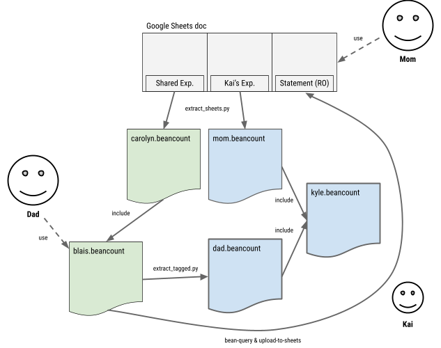

How We Share Expenses
This document explains how I share expenses with my wife. This is a bit involved and I’ve developed a good working system, but it’s not so simple for most people to do that, so I figured I would take the time to describe it to help others with designing similar processes for themselves.
Context
We’re both working professionals and have decided to share all expenses roughly 60%/40%. This is what we shoot for, this is not a hard rule, but we track it as if it were rigid, and accept it as a good approximation. We have two types of shared expenses:
-
Shared. Common expenses between us, e.g., rent, a dinner out with friends, etc.
-
Kyle. Expenses for our child, e.g., daycare, diapers, nanny, baby food.
These get handled very differently, because we book our child's expenses as if it were a separate project on its own. (If you prefer pictures, there’s a diagram at the end of this document that provides an overview of the system.)
Shared Expenses
For our shared expenses, I maintain an account for her on my personal ledger file. This is simple and I’m not too interested in maintaining a separate ledger for the totality of our common shared expenses. It’s sufficient for me to just keep track of her balance on that one account. You can imagine that account like a credit card (I’m the credit provider) that she pays off with transfers and also by making her own shared expenses.
I just declare an Assets:US:Share:Carolyn account on my personal ledger (blais.beancount).
My Shared Expenses
Whenever I incur an expense that is for both of us, I book it normally but I will tag it with #carolyn:
2018-12-23 * "WHISK" "Water refill" #carolyn
Liabilities:US:Amex:BlueCash -32.66 USD
Expenses:Food:Grocery
This gets automatically converted to:
2018-12-23 * "WHISK" "Water refill" #carolyn
Liabilities:US:Amex:BlueCash -32.66 USD
Expenses:Food:Grocery 19.60 USD
Assets:US:Share:Carolyn 13.06 USD
share: TRUE
This is done by a custom plugin I built that splits the expenses according to some rules that we have between us (see also this plugin by Akkukis). In this example, 40% of 32.66 (13.06) gets rerouted to her account. Note that this is an asset account for me, because she owes this.
Her Shared Expenses
We also have to keep track of the money she spends on her own for shared expenses. Since she’s not a Beancount user, I’ve set up a Google Sheets doc in which she can add rows to a particular sheet. This sheet has fields: Date, Description, Account, Amount. I try to keep it simple.
Then, I built an extract_sheets.py script that can pull down this data automatically and it writes it to a dedicated file for this, overwriting the entire contents each time. The contents of this ledger (carolyn.beancount) look like this:
pushtag #carolyn
...
2017-05-21 * "Amazon" "Cotton Mattress Protector in White"
Expenses:Home:Furniture 199.99 USD
Assets:US:Share:Carolyn -199.99 USD
...
poptag #carolyn
All of those transactions are tagged as #carolyn from the pushtag/poptag directive. They get translated by the plugin to reduce the amount by the portion I’m supposed to pay:
2017-05-21 * "Amazon" "Cotton Mattress Protector in White" #carolyn
Expenses:Home:Furniture 119.99 USD
Assets:US:Share:Carolyn -119.99 USD
share: TRUE
These postings typically reduce her asset account by that much, and thus remove the portion she paid for me on these shared expenses.
I generate the file with a single command like this:
extract_sheets.py --tag='carolyn' --sheet='Shared Expenses' '<id>' 'Assets:US:Share:Carolyn' > carolyn.beancount
In my personal ledger, I include this file to merge those expenses with my own directives flow. I also define a query to generate a statement for her account. In blais.beancount:
include "carolyn.beancount"
2020-01-01 query "carolyn" "
select date, description, position, balance
from open on 2017-01-01
where account ~ 'Assets:US:Share:Carolyn'
"
Reviewing & Statement
In order to produce a statement for her to review (and spot the occasional mistake in data entry), I simply produce a journal of that account to a CSV file and upload that to another sheet in the same Google Sheets doc she inputs her expenses:
bean-query -f csv -o carolyn.csv --numberify $L run carolyn
upload-to-sheets -v --docid="<id>" carolyn.csv:"Shared Account (Read-Only)"
This makes it easy for her to eyeball all the amounts posted to her balance with me and point out errors if they occur (some always appear). Moreover, all the information is in one place—it’s important to keep it simple. Finally, we can use the collaborative features of Sheets to communicate, e.g. comments, highlighting text, etc.
Note that this system has the benefit of correctly accruing my expenses, by reducing my portion on categories for the stuff I pay and by including her portion on categories for the stuff she pays for.
Reconciling our Shared Expenses
Finally, in order to reconcile this account, my wife (or I, but usually she’s behind) just makes a bank transfer to my account, which I book to reduce her running account balance:
2019-01-30 * "HERBANK EXT TRNSFR; DIRECTDEP"
Assets:US:MyBank:Checking 3000 USD
Assets:US:Share:Carolyn
Typically she'll do this every month or two. She'll be fiddling on her laptop and ask casually "Hey, what's my balance I can do a transfer now?" It’s all fine to relax about the particulars since the system is keeping track of everything precisely, so she can send some approximate amount, it doesn't matter, it'll post to her account.
Child Expenses
I designed a very different system to track our child’s expenses. For Kyle, I’m definitely interested in tracking the total cash flows and expenses related to him, regardless of who paid for them. It’s interesting to be able to ask (our ledger) a question like: “How much did his schooling cost?”, for example, or “How much did we pay in diapers, in total?”. Furthermore, we tend to pay for different things for Kyle, e.g. I deal with the daycare expenses (I’m the accounting nerd after all, so this shouldn’t be surprising), and his mother tends to buy all the clothing and prepare his food. To have a global picture of all costs related to him, we need to account for these things correctly.
One interesting detail is that it would be difficult to do this with the previously described method, because I’d have to have a mirror of all expense accounts I’d use for him. This would make my personal ledger really ugly. For example, I want to book diapers to Expenses:Pharmacy, but I also have my own personal pharmacy expenses. So in theory, to do that I’d like to have separate accounts for him and me, e.g., Expenses:Kyle:Pharmacy and Expenses:Pharmacy. This would have to be done for all the accounts we use for him. I don't do that.
My Child Expenses on my Personal Ledger
Instead of doing that, what I want is for my personal ledger to book all the expenses I make for him to a single category: Expenses:Kyle, and to track all the detail in a shared ledger. But I still have to book all the expenses to some category, and these appear on my personal ledger, there’s no option (I won’t maintain a separate credit card to pay for his expenses, that would be overkill, so I have to find a way).
I accomplish this by booking the expenses to my own expenses account, as usual, but tagging the transaction with #kyle:
2019-02-01 * "AMAZON.COM" "MERCHANDISE - Diapers size 4 for Kyle" #kyle
Liabilities:US:Amex:BlueCash -49.99 USD
Expenses:Pharmacy
And I have a different plugin that automatically makes the conversion of those transactions to:
2019-02-01 * "AMAZON.COM" "MERCHANDISE - Diapers size 4 for Kyle" #kyle
Liabilities:US:Amex:BlueCash -49.99 USD
Expenses:Kyle 49.99 USD
diverted_account: "Expenses:Pharmacy"
So from my personal side, all those expenses get booked to my “Kyle project” account. This is accomplished by the divert_expenses plugin, with this configuration:
plugin "beancount.plugins.divert_expenses" "{
'tag': 'kyle',
'account': 'Expenses:Kyle'
}"
The “diverted_account” metadata is used to keep track of the original account, and this is used later by another script that generates a ledger file decided to my expenses for him (more below).
My Child Expenses in Kyle’s own Ledger
Now, because we’re considering Kyle’s expenses a project of his own, I have to maintain a set of ledgers for him. I automatically pull the transactions I described in the previous section from my personal ledger and automatically convert them to a file dedicated to his dad (me). This is done by calling the extract_tagged script:
extract_tagged.py blais.beancount '#kyle' 'Income:Dad' --translate "Expenses:Kyle:Mom=Income:Mom" > dad.beancount
The matching transaction from the previous section would look like this in it:
2019-02-01 * "AMAZON.COM" "MERCHANDISE - Diapers size 4 for Kyle" #kyle
Income:Dad -49.99 USD
Expenses:Pharmacy 49.99 USD
As you can see, the script was able to reconstruct the original account name in Kyle’s ledger by using the metadata saved by the divert_expenses plugin in the previous section. It also books the source of the payment to a single account showing it came from his father (Income:Dad). There’s no need for me to keep track of which payment method I used on Kyle’s side (e.g. by credit card), that’s not important to him.
This ledger contains the sum total of all expenses I’ve made for him to date. The file gets entirely overwritten each time I run this (this is a purely generated output, no hand editing is ever done here, if I change anything I change it in my personal ledger file).
Her Child Expenses
In order to keep track of her expenses for Kyle, we use the same method (and programs) as we use for our shared accounts in order to pull a set of “Carolyn’s expenses for Kyle” from another sheet in the same Google Sheets doc:
extract_sheets.py --sheet='Kyle Expenses (Regular)' '<id>' 'Income:Mom' > mom.beancount
This pulls in transactions that look like this:
2018-09-23 * "SPROUT SAN FRANCISCO" "Clothing for Kyle 9-12 months"
Expenses:Clothing 118.30 USD
Income:Mom -118.30 USD
The expenses accounts are pulled from the sheet—sometimes I have to go fix that by hand a bit, as they may not track precisely those from our ledger—and the income shows that the contribution was made by his mother.
Putting it All Together
Finally, we need to put together all these files. I created a top-level kyle.beancount file that simple declares all of his account categories and includes his mom and dad files. We have three files:
dad.beancount
mom.beancount
kyle.beancount -> includes transactions from dad.beancount and mom.beancount
I can then run bean-web or bean-query on kyle.beancount. There are two things which are interesting to see on that ledger:
-
The distribution of Kyle’s expenses, in other words, what’s it costing us to raise a child (regardless of who pays).
-
The difference between our contributions.
In order to reconcile (2), we basically compare the balances of the Income:Mom and Income:Dad accounts. This can be done “by hand”, visually (using a calculator), but since Beancount’s API make it so easy to pull any number from a ledger, I wrote a simple script which does that, computes the total amount of Income contributions, breaks it down to the expected numbers based on our chosen breakdown, compares it to each parent’s actual contribution, and simply prints out the difference:
$ reconcile_shared.py kyle.beancount
Total contributions: 71009.30
Dad expected contribution: 42605.58
Dad actual contribution: 42906.58
Mom expected contribution: 28403.72
Mom actual contribution: 28102.72
Mom OWES Dad: 301.00
After reconciling, the final number should be zero.
Reconciling the Child Ledger
In order to account for the difference and make the contributions to Kyle’s upbringing in line with our mutual arrangement of 60%/40%, in the previous section, my wife would need to transfer $301 to me. Of course, we don’t actually transfer anything in practice, I just add a virtual transfer to book the difference to her shared account on my ledger. To do this, all I have to do is insert a transaction in blais.beancount that looks like this:
2019-02-09 * "Transfer to reconcile Kyle's expenses" #kyle
Assets:US:Share:Carolyn 301.00 USD
Expenses:Kyle:Mom
When this gets pulled into dad.beancount (as explained previously), it looks like this:
2019-02-09 * "Transfer to reconcile Kyle's expenses" #kyle
Income:Mom -301.00 USD
Income:Dad 301.00 USD
After that, going back to the Kyle ledger, pulling in all the transactions again (this is done by using a Makefile) would show an updated balance of 0:
$ reconcile_shared.py kyle.beancount
Total contributions: 71009.30
Dad expected contribution: 42605.58
Dad actual contribution: 42605.58
Mom expected contribution: 28403.72
Mom actual contribution: 28403.72
Mom OWES Dad: 0.00
Summary of the System
Here’s a diagram that puts in perspective the entire system together:

I (“Dad”) use Beancount via Emacs, exclusively. Carolyn (“Mom”) only interacts with a single Google Sheets doc with three sheets in it. I pull in Carolyn’s shared expenses from a sheet that she fills in to a ledger which gets included in my personal ledger. I also pull in her expenses for Kyle in a similar document, and from my personal ledger I generate my own expenses for Kyle. Both of these documents are merged in a top-level ledger dedicated to Kyle’s expenses.
I’m not going to claim it’s simple and that it’s always up-to-date. I tend to update all of these things once/quarter and fix a few input errors each time we review it. I automate much of it via Makefiles, but frankly I don’t update it frequently enough to just remember where all the moving pieces are, so every time, there’s a bit of scrambling and reading my makefiles and figuring out what’s what (in fact, I was motivated to write this to cement my understanding solidly for the future). Amazingly enough, it hasn’t broken at all and I find all the pieces every time and make it work.
And we have enough loose change between the two of us that it’s never that urgent to reconcile every week. My wife tends to pay more shared expenses and I tend to pay more Kyle’s expenses, so I often end up doing a transfer from one to the other to even things out and it’s relatively close—the shortfall in Kyle expenses makes up for my shortfall on the shared expenses.
Conclusion
I hope this was useful to some of you trying to solve problems using the double-entry bookkeeping method. Please write questions and comments on the Beancount mailing-list, or as comments on this doc.